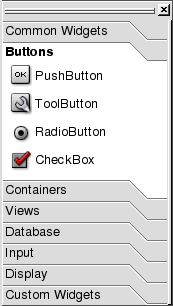

| Home | All Classes | Main Classes | Annotated | Grouped Classes | Functions |
[Prev: Reference: Menu Options] [Home] [Next: Reference: Dialogs]
Qt Designer's toolbar buttons provide fast access to common functionality. Toolbar buttons are grouped in several toolbars. Toolbars have a handle at the left hand side which can be clicked to minimize the toolbar. Toolbars that have been minimized have their handle appear just under the menu bar; click the handle to restore the toolbar to the last position it occupied. You can drag a toolbar's handle to move the toolbar to a different position in the toolbar area. Toolbars can be dragged out of the toolbar area entirely and made into stand-alone tool dock windows. To hide a tool dock window click its close button. To restore a hidden tool dock window, right click the tool area, then click the name of the tool dock window you wish to restore.
File Toolbuttons
New
Click this toolbar button (or press Ctrl+N) to create a new project, form or file. This option invokes the New File Dialog.
Open
Click this toolbar button (or press Ctrl+O) to open existing projects, forms or files. This button invokes the File Open Dialog which is used to select files.
Save
Click this toolbar button (or press Ctrl+S) to save the project, forms and files. For a new project that has no forms or files, click 'Save' to save the project before exiting. For new forms, click 'Save' and the Save Form As Dialog appears.
Active Project
Click the combobox to view the names of the projects that are currently open and select a project name to toggle between the projects.
Edit Toolbuttons
Undo
Click this toolbar button (or press Ctrl+Z) to undo an action. The name of the last action that was performed appears after the word 'Undo' in this toolbar button's tooltip.
Redo
Click this toolbar button (or press Ctrl+Y) to redo an action. The name of the last action that was performed appears after the word 'Redo' in this toolbar button's tooltip.
Cut
Click this toolbar button (or press Ctrl+X) to delete the selected item from the current form or file and copy it to the clipboard.
Copy
Click this toolbar button (or press Ctrl+C) to copy the selected item from the current form or file to the clipboard.
Paste
Click this toolbar button (or press Ctrl+V) to paste the selected item (if any) from the clipboard into the current form or file.
Search Toolbuttons
Find
Click this toolbar button (or press Ctrl+F) to invoke the Find Text Dialog.
Find Incremental
Click this toolbar button (or press Alt+I) to place the cursor in the text box located next to the Find toolbar button. Type characters into the text box; as you type, Qt Designer will highlight the first occurrence of the text that it finds in the file. Press the Enter key to go to the next occurrence of the text. Press the Esc key once you have found the word you are looking for to place the cursor in the editor.
The tools toolbar buttons are available through toolbars (as they have always been prior to Qt 3.1), and also via the new Toolbox. From Qt 3.1, the tools toolbars are hidden and the Toolbox is shown. The Toolbox is divided into groups, with the first group being "Common Widgets" which contains the widgets you're likely to use most often. If you prefer to use the original toolbar setup, you can access the toolbars by clicking Windows|Toolbars and then selecting the toolbars you want to be visible from the context menu.
The Toolbox contains categories describing the type of toolbuttons you can find within each catgory. Click a category name to access the toolbuttons in that category. To use a widget in a category, click the widget to activate it. Click the 'x' in the right hand corner of the Toolbox to close it. To make the Toolbox appear again, click Window|Views|Toolbox.
The Toolbox
If you want to add the same kind of widget several times to a form, for example, several push buttons, double click the widget's toolbar button. After this, each time you click the form a new widget will be added. Click the Pointer toolbar button to leave this mode.
Tools
Pointer
Click this toolbar button (or press F2) to de-select any selected widget toolbar button. The pointer is also used to stop inserting new widgets if you double clicked a widget toolbar button. Press the Esc key to return to the pointer at any time.
Connect Signals and Slots
Click this toolbar button (or press F3) to connect signals and slots. Then click on a widget and drag the connection line to the widget (or the form) that you want to connect to. Release the mouse button and the View and Edit Connections Dialog will appear.
Tab Order
Click this toolbar button (or press F4) to set the tab order for all the widgets on the form that can accept keyboard focus. Click this toolbar button and blue circles with numbers on them appear next to the widgets. Click the widget that you want to be first in the tab order, then click the widget that should be next in the tab order, and continue until all the widgets have the tab order numbers you want. If you make a mistake, double click the first widget and start again. Press Esc to leave tab order mode. If you want to revert your changes, leave tab order mode, then undo.
Set Buddy
Click this toolbar button (or press F12) to set a buddy to a label. Then click on a label and drag the line to the widget that you want to be the buddy. Release the mouse button and the buddy is set.

Buttons
PushButton
Click this toolbar button, then click the form, to place a Pushbutton on the form.
ToolButton
Click this toolbar button, then click the form, to place a Toolbutton on the form.
RadioButton
Click this toolbar button, then click the form, to place a Radiobutton on the form. It is recommended that you place RadioButtons inside ButtonGroups so that Qt will automatically ensure that only one RadioButton in the group is active at any one time.
CheckBox
Click this toolbar button, then click the form, to place a CheckBox on the form.
Containers
GroupBox
Click this toolbar button, then click the form, to place a GroupBox on the form.
ButtonGroup
Click this toolbar button, then click the form, to place a ButtonGroup on the form.
Frame
Click this toolbar button, then click the form, to place a Frame on the form.
TabWidget
Click this toolbar button, then click the form, to place a TabWidget on the form. To add or remove tabs, right click the tab widget and choose 'Add Page' or 'Remove Page'.
Views
ListBox
Click this toolbar button, then click the form, to place a ListBox on the form.
ListView
Click this toolbar button, then click the form, to place a ListView on the form.
Icon View
Click this toolbar button, then click the form, to place an IconView on the form.
Table
Click this toolbar button, then click the form to place a Table on the form.

Database Toolbuttons
DataTable
Click this toolbar button, then click the form, to place a DataTable on the form.
DataBrowser
Click this toolbar button, then click the form, to place a DataBrowser on the form.
DataView
Click this toolbar button, then click the form, to place a DataView on the form.
Input Toolbuttons
LineEdit
Click this toolbar button, then click the form, to place a LineEdit on the form.
SpinBox
Click this toolbar button, then click the form, to place a SpinBox on the form.
DateEdit
Click this toolbar button, then click the form, to place a DateEdit on the form.
TimeEdit
Click this toolbar button, then click the form, to place a TimeEdit on the form.
DateTimeEdit
Click this toolbar button, then click the form, to place a DateTimeEdit on the form.
TextEdit
Click this toolbar button, then click the form, to place a TextEdit on the form.
ComboBox
Click this toolbar button, then click the form, to place a ComboBox on the form.
Slider
Click this toolbar button, then click the form, to place a Slider on the form.
ScrollBar
Click this toolbar button, then click the form, to place a Scrollbar on the form.
Dial
Click this toolbar button, then click the form, to place a Dial on the form.
Display Toolbuttons
TextLabel
Click this toolbar button, then click the form, to place a TextLabel on the form.
PixmapLabel
Click this toolbar button, then click the form, to place a PixmapLabel on the form.
LCDNumber
Click this toolbar button, then click the form, to place a LCDNumber on the form.
Line
Click this toolbar button, then click the form, to place a Line on the form.
ProgressBar
Click this toolbar button, then click the form, to place a ProgressBar on the form.
TextBrowser
Click this toolbar button, then click the form, to place a TextBrowser on the form.

Custom Widget Toolbutton
My Custom Widget
Click this toolbar button, then click the form, to place a Custom Widget on the form. Note: this toolbar button only appears if you have created a custom widget using Tools|Custom|Edit Custom Widgets.
Layout Toolbuttons
Adjust Size
Click this toolbar button (or press Ctrl+J) to adjust the size of the widget to it's recommended size.
Lay Out Horizontally
Click this toolbar button (or press Ctrl+H) to lay out the selected widgets or layouts side by side. Use Shift+Click to select each widget or layout, and then choose this toolbar button to group them horizontally. Note that for complex widgets it is sometimes easiest to select widgets and layouts by clicking them in the Widgets tab of the Object Explorer Window.
Lay Out Vertically
Click this toolbar button (or press Ctrl+L) to lay out the selected widgets one above the other. Use Shift+Click to select each widget or layout, and then choose this toolbar button to group them vertically. Note that for complex widgets it is sometimes easiest to select widgets and layouts by clicking them in the Widgets tab of the Object Explorer Window.
Lay out in a Grid
Click the widgets you want and then click this toolbar button (or press Ctrl+G) to lay out widgets in a grid.
Lay Out Horizontally (in Splitter)
Click this toolbar button to lay out the selected groups of widgets or layouts side by side with a splitter between each group. Use Shift+Click to select each widget or layout, and then choose this toolbar button to group them horizontally. Note that for complex widgets it is sometimes easiest to select widgets and layouts by clicking them in the Widgets tab of the Object Explorer Window.
Lay Out Vertically (in Splitter)
Click this toolbar button to lay out the selected groups of widgets or layouts one above the other with a splitter between each group. Use Shift+Click to select each widget or layout, and then choose this toolbar button to group them vertically. Note that for complex widgets it is sometimes easiest to select widgets and layouts by clicking them in the Widgets tab of the Object Explorer Window.
Break Layout
Click this toolbar button (or press Ctrl+B) to break a layout. Click on the layout and select this option; the layout is deleted.
Add Spacer
Click this toolbar button to add a spacer to widgets that take up too much space on the form. The spacer consumes extra space in the layout.

Help Toolbutton
What's This?
Click this menu option to invoke a small question mark that is attached to the mouse pointer. Click on a feature which you would like more information about. A message box appears with information about the feature.
[Prev: Reference: Menu Options] [Home] [Next: Reference: Dialogs]
| Copyright © 2007 Trolltech | Trademarks | Qt 3.3.8
|